R1 森の塊の試作(11-21 06:42 ユーザーの描き方)
概要: あなたの描き方のとおり、「深緑の下地 → やや暗い影70% → 明るい影40%」で、森の塊を広葉樹と針葉樹に分けて試作しました。評価はまだ聞いていません(採用は未決)。
1. 描き方(あなたの指示)
- 暗い深緑を下地に描く。端は不規則な形にする。
- その上に、木のシルエットの「やや暗いもの」をランダムに置く。下地の70%が埋まるまで。
- その上に、もう少し明るいシルエットを、下地の40%ぶん、ランダムに置く。
- 広葉樹と針葉樹は別々に作る。
2. 試作の結果
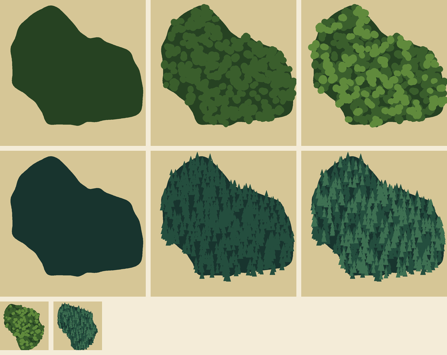
上段=広葉樹(丸い樹冠)、下段=針葉樹(2段の三角)。左=下地、中=やや暗い影70%、右=明るい影40%。左下の小さな2枚は、地図に置く大きさ(実寸)の見え方です。
3. 私の解釈(未確認)と実測
- 明るさの順は、下地(いちばん暗い)<やや暗い影<明るい影、と解釈しました。
- 70%・40%は、下地の面積に対する各層の被覆率と解釈しました。実測(下地の面積に対する、シルエットが覆った割合): 広葉樹は 71%・42%、針葉樹は 70%・40%。
- 木は下地の中の点を中心に置き、はみ出した分は輪郭になります(端が少しぎざぎざになる)。
- 色・木の大きさ・形は、私の初期値です(広葉樹=黄みの緑、針葉樹=青みの緑)。
4. 限界・確かめられていないこと
- 目視のみ。世界地図に載せて見るのは、まだです(単色の砂色の上で確認)。
- 実寸(左下)は、小さい画面ではつぶれて見える可能性があります(iPhoneでの見え方は未測定)。
- 混交林、山の斜面、川・海岸との重なり、地形に沿った形は、まだ作っていません。
道具(第1版): mapstyle/tools/forest_mass.py
5. 第2版(11-21 06:47 ユーザー: 広葉樹のシルエットが下手・針葉樹はまし)
広葉樹は、Geminiの木の見本シートから、木1本ずつの影絵を9種切り出して使い、置くときに左右反転・大きさをランダムにしました。針葉樹は、三角の高さ・太さを3通りにしました(形はそのまま)。評価はまだ聞いていません。
切り出した広葉樹の影絵(9種):
第2版の結果(段階の見方は第2章と同じ):

- 実測(下地に対する被覆率): 広葉樹 71%・41%、針葉樹 70%・40%。
- 影絵の元は、Geminiの木の見本シート(角のある多角形の樹冠)なので、丸ではなく角張った形になります。
- 「参考絵から輪郭を取る」のうち、参考地図(62枚)からの輪郭はまだ取っていません(元絵が小さく粗いので、1本ずつの輪郭が取りにくい)。Geminiのシートだけを使いました。
- 密な塊・紅葉の大きな塊は、1本に分けられず使っていません。灰緑・桜・緑の広葉樹のみ(桜は色を変えて緑で使っています)。
- 限界: 目視のみ。9種は少ない(繰り返しが見えるかもしれない)。世界地図には未搭載。
6. 第3版(11-21 06:53 ユーザー: 大きさを少しランダムに・形は「上に丸い三日月」)
広葉樹の見えない理由(明暗がない・大きさがそろいすぎ)を、ユーザーが「それだよ」と確認。大きさを少しランダムにし、形は丸い樹冠に、上は明るい三日月・下は暗い三日月を付けました。針葉樹は第2版のまま。評価はまだ聞いていません。

- 私の解釈(未確認): 「上に丸い三日月」=丸い樹冠の上側に、光の当たる明るい三日月を付ける、と解釈しました。下側の暗い三日月(陰)は私が足しました。ご意図と違えば教えてください(例: 輪郭そのものを三日月型にする、など)。
- 樹冠は、大小の丸を3〜4個重ねた形(もこもこ)。大きさは、幅の目安 11〜24 の間でランダム(第2版は13〜20)。
- 実測(下地に対する被覆率): 広葉樹 70%・40%、針葉樹 70%・40%。
- Geminiの影絵(第2版)は使っていません(この版は自前の丸+三日月)。
- 限界: 目視のみ。世界地図に未搭載。色は初期値。三日月の明るさ・位置は私の初期値。
7. 第4版(11-21 06:55 ユーザー: 下の三日月はいらない。上だけでデフォルメ。上の形だけをばら撒く)
下の暗い三日月をやめました。「上の形だけ」の読み方が2通りあるため、2案を並べます(どちらも評価待ち)。

- 上段=案A: 丸い樹冠+上の明るい三日月だけ(下の暗い三日月なし)。
- 下段=案B: 上の三日月の形だけをばら撒く(樹冠の丸は描かない)。私の見立て: 草や羽のように見え、木には見えにくい。
- 私の見立て: 案Aのほうが、木の塊に見える。
- どちらも、大きさは少しランダム。被覆率は 70%・40%(下地に対する割合)。針葉樹は変えていません。
- 限界: 目視のみ。世界地図に未搭載。色と三日月の位置は初期値。
8. 第5版(11-21 07:01 ユーザー: 下地→周りに「上の広葉樹」→中は「下の三日月」)
あなたの指示どおりに作りました。暗い緑の下地 → 周り(縁の帯)に「上の広葉樹」(丸い樹冠+上の明るい三日月)を適度に → 中は「下の三日月」(三日月の形だけ)。評価はまだ聞いていません。
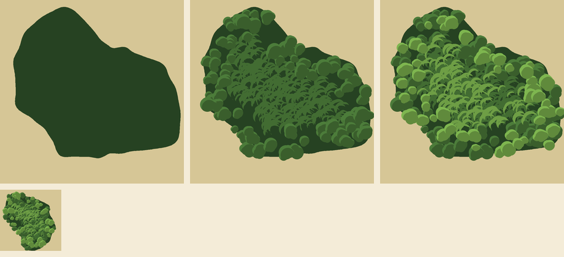
左=下地、中=暗い層、右=明るい層を重ねた完成。左下は実寸の見え方です。
- 私の解釈(未確認): 「上の」「下の」は、第4版の画像の上段(案A)と下段(案B)を指す、と読みました。「周り」は、下地の縁から幅 約14% の帯としました。
- 各層の被覆率(各ゾーンの面積に対する割合): 中は暗い層71%・明るい層40%、周りは暗い層61%・明るい層43%(周りは「適度に」として、目標を 60%・40% にしました)。
- 大きさは少しランダム(幅の目安 11〜24)。針葉樹は、この版では作っていません。
- 私の見立て: 中の三日月は羽やシダのように見え、周りの丸い木がまとまって見える。中が木に見えるかは、評価が要ります。
- 限界: 目視のみ。世界地図に未搭載。帯の幅・色・三日月の位置は初期値。
9. 第6版(11-21 07:41 ユーザー: 第5版は「随分良くなった」。中を下地にして、右(明るい層)を小さな範囲・手前の下の方に上書き)
ユーザーの評価(11-21 07:41): 第5版は「随分良くなった」。続けて、真ん中(暗い層)を下地として置き、右(明るい層)を、小さな範囲で、手前の下の方に上書きする指示。
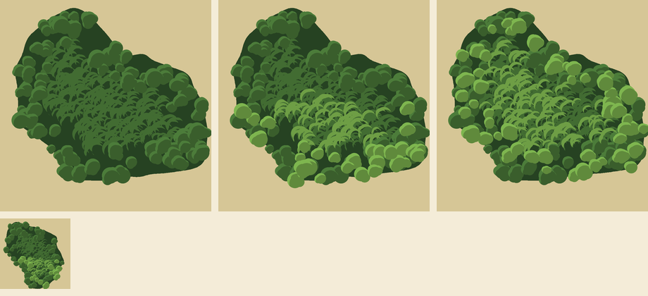
左=中の段階(暗い層まで・下地)、中央=第6版(明るい層を下側だけに上書き)、右=第5版(明るい層を全体に)。左下は第6版の実寸です。
- 私の解釈(未確認): 指示は2回に分かれ、1回目は途中で中断されたため、2回目を採りました。「真ん中」=第5版の画像の中の段階(暗い層まで)、「右」=明るい層、「手前の下の方」=森の塊の下側(地図の手前側)と読みました。
- 明るい層は、塊の高さの下側約45%に限り、境目はゆらゆらさせました(直線にしない)。中と周りの暗い層は第5版と同じです。
- 明るい層の被覆率(その範囲の面積に対する割合): 中 42%、周り 47%(周りが目標40%より多め)。
- 私の見立て: 手前が明るく、奥が暗く沈むので、奥行きと厚みが出る。ただし、光が下から当たるように見えるかは、あなたの感覚で判断が要る。
- 限界: 目視のみ。世界地図に未搭載。範囲(45%)と境目のゆらぎは初期値。
10. 第7版(11-21 07:50 ユーザー: 明るい部分を、少し上に丸く上げて)
第6版の明るい部分の上側を、中央がいちばん高い半円状(ドーム形)に、少し上へ持ち上げました。評価はまだ聞いていません。

左=第6版(比較)、右=第7版。左下は第7版の実寸です。
- 持ち上げは、塊の高さの約16%(中央)。左右の端では、第6版と同じ高さに戻ります。
- 私の解釈(未確認): 「少し上に丸く上げて」=明るい部分の上の境目を、丸い山形に持ち上げる、と読みました。
- 明るい層の被覆率(その範囲に対して): 中 40%、周り 42%。暗い層は変えていません。
- 限界: 目視のみ。世界地図に未搭載。持ち上げの高さ(16%)は初期値。
11. 第8版(11-21 07:52 ユーザー: 形はガウス揺らぎに。薄い所・濃い所もガウス揺らぎに任せる。できる?)
できました。明るい部分の形と濃淡を、「ガウス揺らぎ」(なめらかにつながった乱数の場)で決める方式にしました。直線の境目や半円(第6・7版)はやめています。評価はまだ聞いていません。
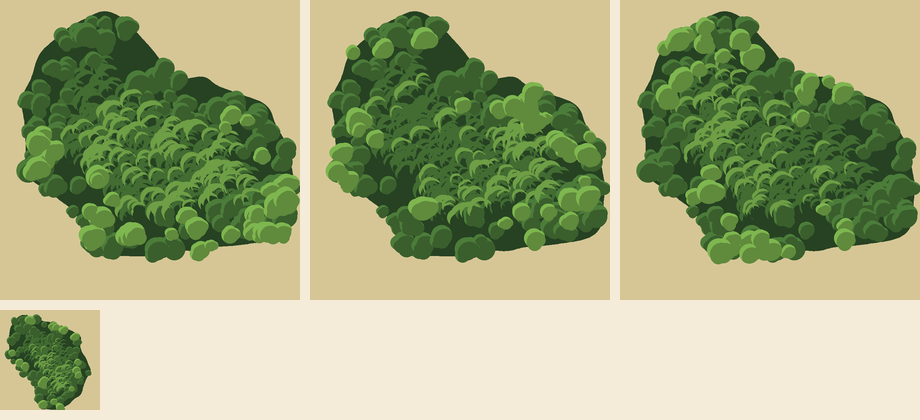
左=第7版(比較)、中央=第8版(揺らぎの種A)、右=第8版(揺らぎの種B。同じ暗い層で、揺らぎだけ別)。左下は第8版の実寸です。
- 仕組み(やさしく): 森の上に、なめらかに波打つ「明るさの地図」を1枚かぶせます。山の所は明るい木が多く、谷の所は少なくなります。木を置くとき、その場所の高さに応じた確率で置くので、境目がぼんやり、濃淡のむらが自然に出ます。
- 波の大きさ: 塊の幅の約11%(これより大きいと大きな塊のむら、小さいと細かいむらになる)。種を変えると、形が変わります(中央と右)。
- 私が足した弱い傾き(未確認): 「手前の下側が明るめ」の指示(第6版)を、弱く残しました(揺らぎが主、傾きは従)。不要なら外せます。
- 明るい層の被覆率: 全体で約22%を目標にし、実測は中 23%・周り 27%(これまでは範囲に対して40%だった。範囲という考え方がなくなったため、私が決めた値)。
- 限界: 目視のみ。世界地図に未搭載。波の大きさ・強さ・傾き・22%は初期値。
12. 第9版 針葉樹(11-21 07:55 ユーザー: 針葉樹も同じ方式で。上三日月は尖り三角になるのかな)
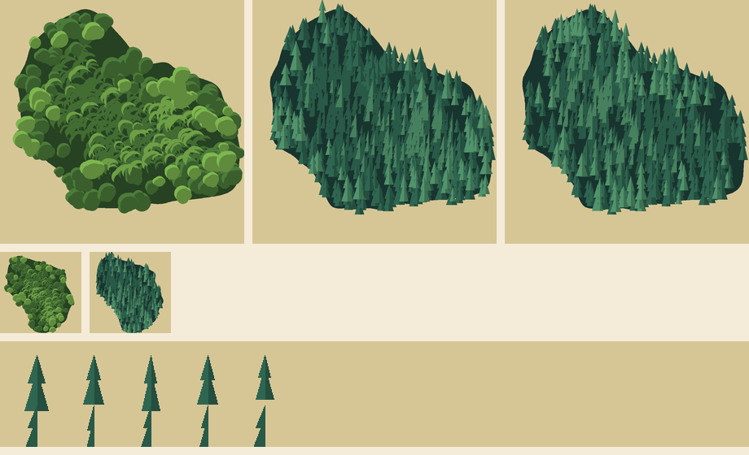
左=広葉樹(第8版)、中央=針葉樹(揺らぎの種A)、右=針葉樹(種B)。2段目は実寸(左=広葉樹、右=針葉樹)、下は針葉樹の部品見本(上段=縁用の全体、下段=中用の尖り三角だけ)。
- 答え(私の解釈・未確認): 「上三日月」は、針葉樹では「光の当たる左半分の尖った三角」になりました。木は2段の三角で、縁には全体(暗い三角+明るい尖り三角)、中には尖り三角だけを置きます。
- 方式は広葉樹と同じ: 暗い下地→暗い層(約70%)→明るい層はガウス揺らぎ(波の大きさ=幅の約11%)。
- 実測の被覆率: 暗い層 中70%・縁61%、明るい層 中23%・周り23%。
- 限界: 目視のみ。世界地図に未搭載。部品見本の下段は図の下が切れている(見た目の不具合)。形・大きさ・色は初期値。
13. 第10版(11-21 07:59 ユーザー: 最初の下地もガウス揺らぎに寄せる。その方が自然では)
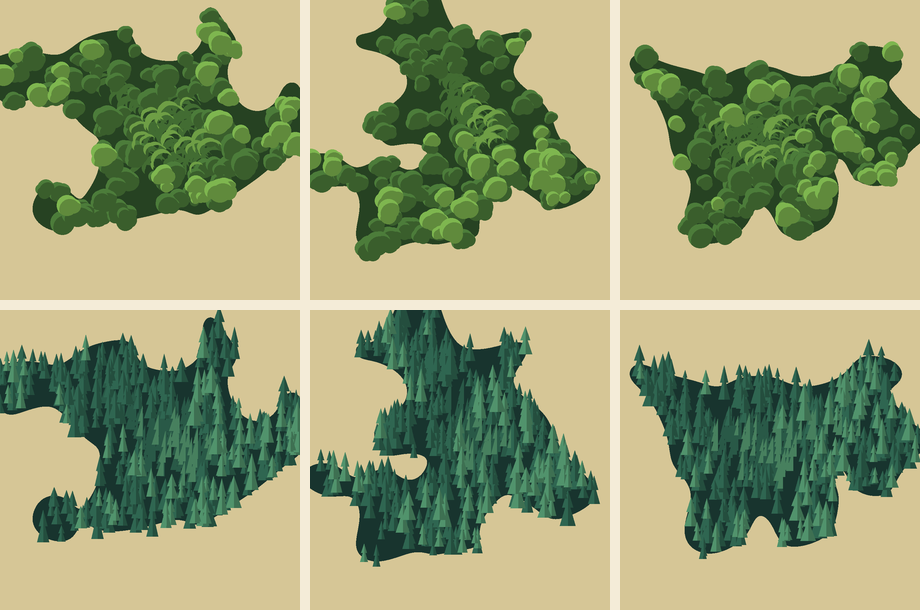
上=広葉樹、下=針葉樹。左・中央・右は、下地の揺らぎの種を変えたものです(木の置き方は第8・9版と同じ)。
- 仕組み(やさしく): 下地の形も、なめらかに波打つ乱数の「高さの地図」で決めます。中心ほど高い丘を足し、一定の高さより上を下地にします。これまでの「円の縁をゆらす」方式より、くびれ・入り江・張り出しが自然に出ます。
- 私が足した決め事(未確認): 面積を枠の約40%にそろえる/外につながらない穴はふさぐ/いちばん大きい1つの塊だけ残す。
- 実測(暗い層の被覆率): 約70%/縁約60%。明るい層は約22〜36%(下地が変わると揺らぎの当たり方が変わるため、ばらつく)。
- 限界: 目視のみ。世界地図に未搭載。左と中央は塊が枠に触れて切れている(見た目だけの不具合)。波の大きさ・丘の強さ・40%は初期値。
14. 世界地図に置いてみる(11-21 08:09 ユーザー: まず今のまま、どう乗せるかをやって考えよう)
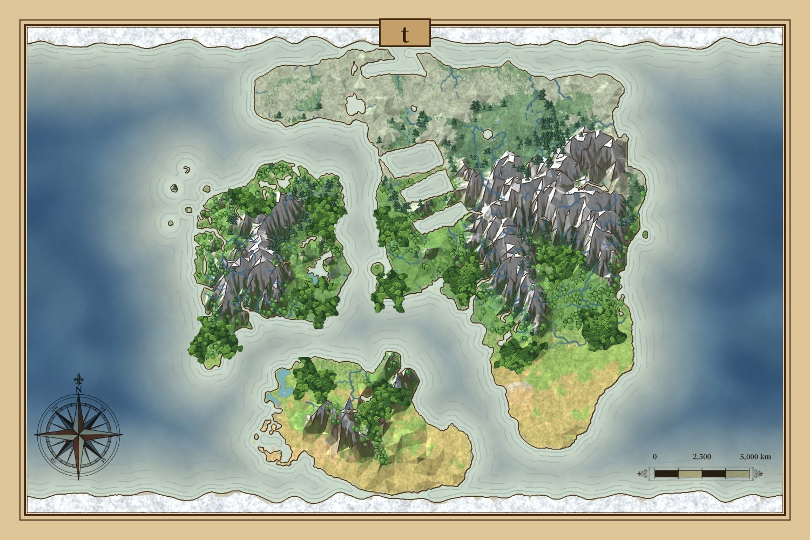
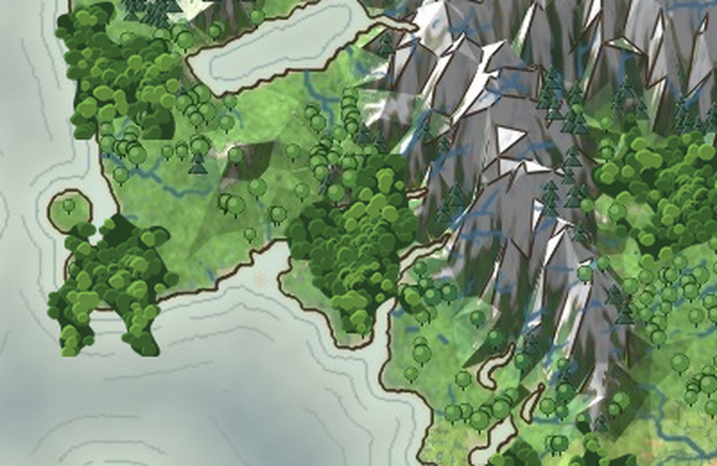
- やったこと: 最新の世界地図(mapstyle50 の世界5=lp50_pwg5.jpg)の緑の所に、第10版の広葉樹の塊を12個、そのまま置きました(間隔約105画素・大きさ90〜115画素)。針葉樹は、置き場の条件(地図の北側)に当たる緑が無く、今回は置いていません。
- 置き場の決め方(私の仮): 絵の色が緑の所を探しただけです。群系のデータは使っていません(この絵の元データがハブに無いため)。
- 目で見た見立て(未確認): 地図の水彩風の淡い色に対して、塊は色が濃く、縁がはっきりしていて、確かに「浮いて」見えます。海岸に近い所では陸からはみ出し、山の上にも載っています。元からある小さな木の上にも重なっています。
- 限界: 目視のみ。色や縁の調整はまだしていません。置き場は仮。iPhoneでの見え方は未測定。
15. 元の木を全部取って、木の多い所に森の塊を足す(11-21 08:17 ユーザー指示)
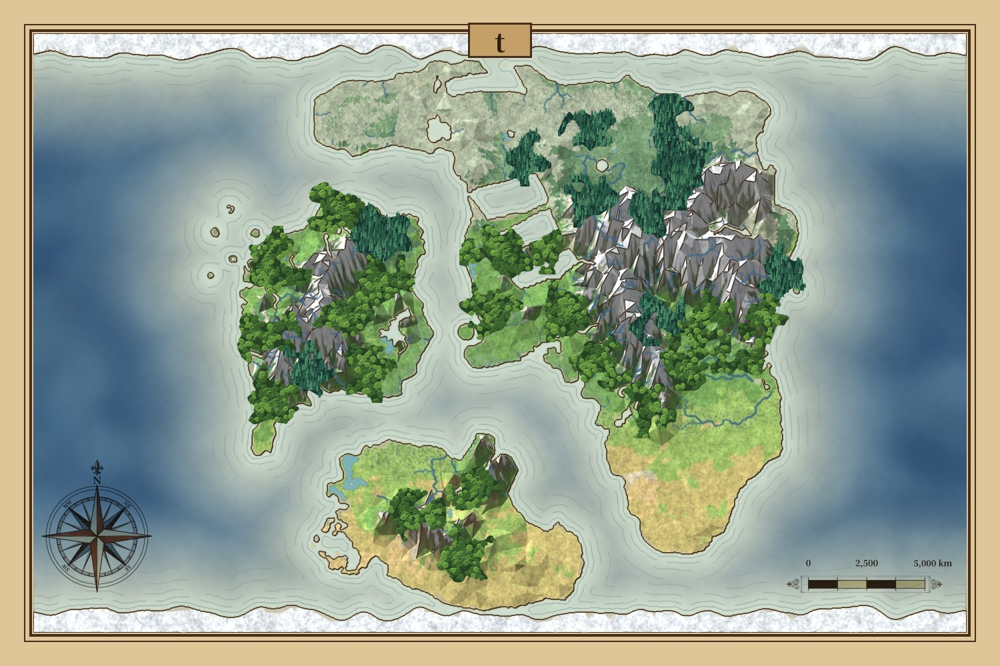
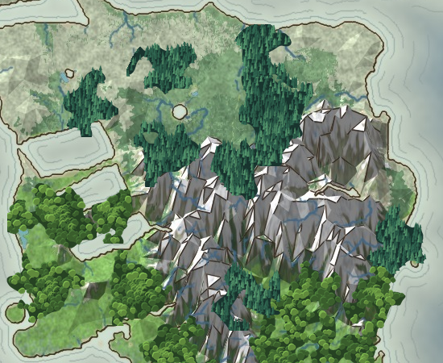
- やったこと: ①元の地図の小さな木を全部取る(木なしの絵=mapstyle49 の世界5を使用) ②木の多かった所(元の木の密度が高い所)に、第10版の森の塊を30個足す(広葉樹20・針葉樹10)。大きさは密度に応じて80〜130画素。
- 解釈(未確認): 「木の要素の出し方=木が多い場所、木が多くなるだろう場所」を、元の木の密度が高い所=今後も木が多い所、と読みました。群系データは使っていません。
- 仕組み(やさしく): 木なしの絵と木ありの絵の差が「木」。その差をなめらかにして濃さの地図にし、濃い所に森の塊を置く。針葉樹か広葉樹かは、元の木の色(青みが強いと針葉樹)で決める。塊は木のあった範囲からはみ出さないよう切る。
- 目で見た見立て(未確認): 木の多い所は森の塊になり、北の針葉樹と南の広葉樹の分かれ方は元のまま残った。一方、塊の緑は水彩風の地図より濃く、まだ浮く。山の斜面にも塊がかかる(元の木があったため)。
- 限界: 目視のみ。色・縁の馴染ませは未実施。木なしの絵は前の版の絵で、他の違いがないかは未確認。iPhone未測定。
16. 地形の上に貼り付ける(11-21 09:10 ユーザー案: 下地のアンジュレーションを活かすため、地形の上に下地を描いてからUV加工で貼る。山の作り方でやったやつ)
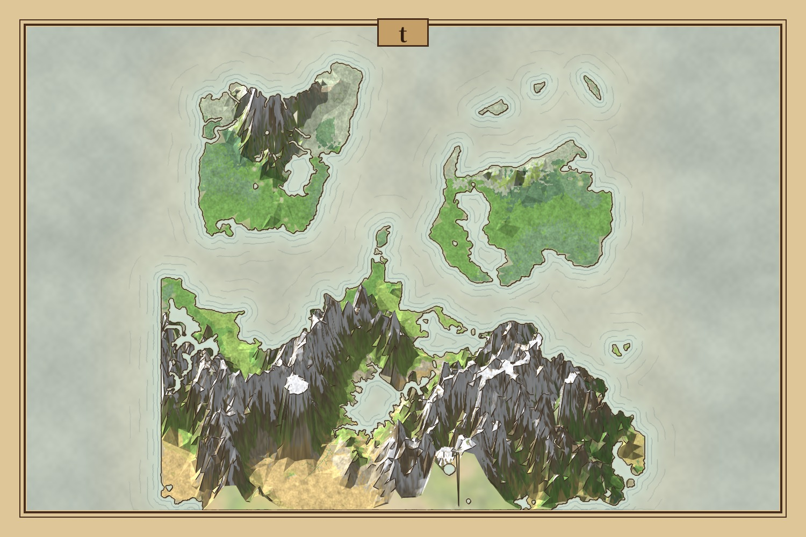
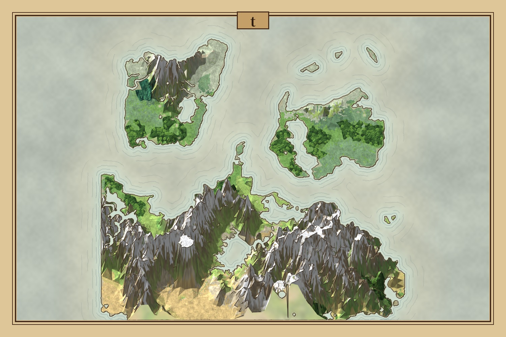
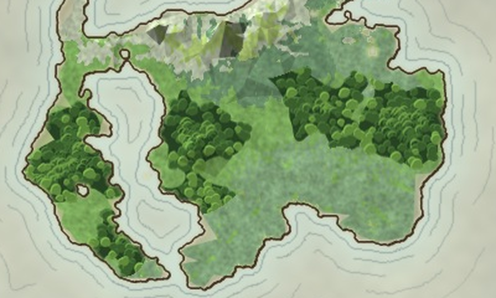
- 解釈(未確認): 山の作り方(面ごとのUV加工=地図の位置を使って絵を面に貼り、面ごとに陰を掛ける)に、森の絵を「透明な層」として差し込む。森は平らな絵として置かず、地形の面に貼られて陰を受ける。
- やったこと: lowpoly.py に層の差し込み口(FM_LP_OVERLAY)を足した。層は forest_world_layer.py が、世界データの森の群系(広葉樹の群系・タイガ)に第10版の塊(13個、うち針葉樹1)を置いて作る。上の絵=森なし、中=森あり。
- 目で見た見立て(未確認): 塊が地形の面の陰を受けるので、平らに貼るより地面に馴染む。丘や山の斜面では、陰が塊の上に掛かる。一方、低地はこの3Dがゆるく、効果は小さい。
- 注意: これは世界5ではなく、別の世界(tapworld-pwg)の絵です(世界5の元データがハブに見当たらないため)。木の置き方は第15章(元の木の密度)ではなく、群系から決めた別の方法。
- 限界: 目視のみ。塊の色の濃さはそのまま(水彩風への馴染ませは未実施)。木の大きさは面の細かさとの兼ね合いが未調整。iPhone未測定。
17. 世界のデータから作り直し(11-21 09:16 ユーザー: 世界から作り直して。なぜデータを取っていないのか、取るように指示した)
経緯(私の落ち度): 世界データはドライブ「ファンタジー世界戦争/世界データ」に保管する決まりなのに、第16章では先にそこを探さず、別の世界(ハブ内の古い1つ)で試しました。今回、ドライブから取得しました。
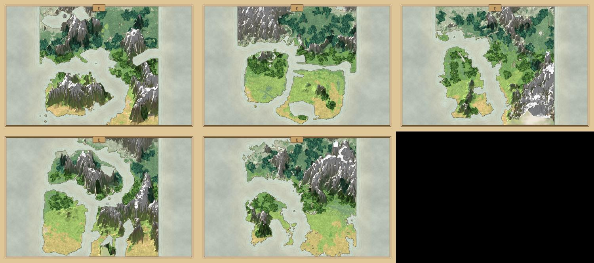
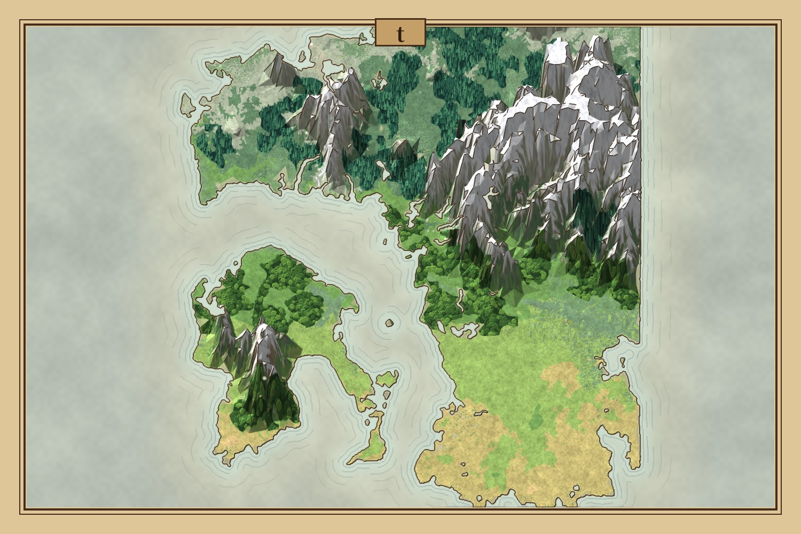
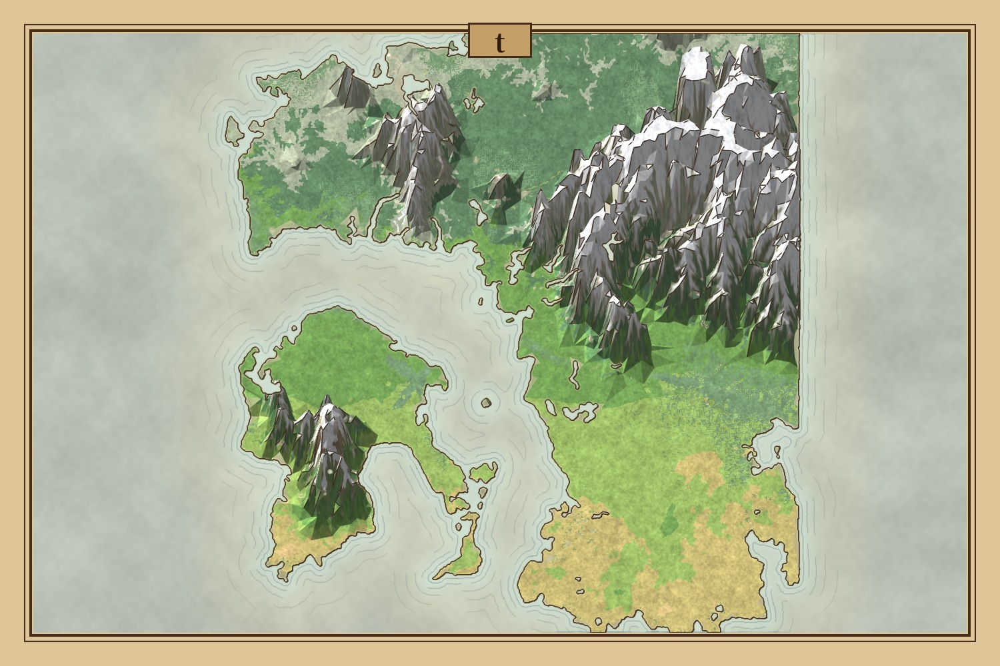
- 使ったデータ: ドライブ「世界データ_PWG5_陸4-5割_2026-11-20.zip」の5世界(pm51〜pm55)。世界データ(高さ・群系)から、地表→ローポリ(面ごとのUV)まで作り直し、森の層(広葉樹の群系=広葉樹の塊、タイガ=針葉樹の塊)をUVで貼りました。上の大きい絵=5世界、中=pm55の森あり、下=森なし。
- 目で見た見立て(未確認): 5世界とも、森の塊が面の陰を受けて地形に沿って見える(山の斜面で特に)。針葉樹と広葉樹の分かれ方は群系どおり。低地では効果がゆるい。
- 見つけた欠け: 以前の「世界5」(mapstyle49〜50で使った3つの大陸の世界)の元データは、ドライブにもハブにも無い。ドライブにあるのは、11-20の「PWG5・自作5・Azgaar5(陸4〜5割)」と「バックアップ(自作・Azgaar等)」。以前の世界5は保管されていなかったため、同じ世界での比較はできない。
- 気づいた不具合: 5世界とも陸が正方形の枠で切れて見える所がある(既知の課題。mapstyle37以来)。
- 限界: 目視のみ。塊の色は水彩風に未調整。小さな塊は内側が空になり作れない場合があり、種を変えてやり直した。iPhone未測定。
道具: extract_stamps.py(影絵の切り出し)、forest_mass.py(森の塊)、forest_on_map.py(地図に置く試験)、forest_replace_trees.py(木を取り替える)、forest_world_layer.py(森の層)、lowpoly.py(FM_LP_OVERLAY)、再生手順
R0 調査 / ハブへ戻る